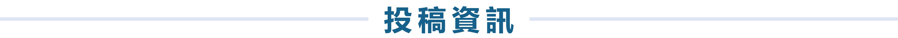

我要投稿
本研討會發表形式分為口頭論文發表與海報論文發表二種，論文之發表形式將由評議小組審查審查後通知：
- 口頭論文發表
- 海報論文發表
12分鐘簡報論文內容，3分鐘討論問答，每個場次都將安排一位主持人負責介紹所有發表者並協調討論的進行，場次依會議當日活動議程表規定。
展示時間為3月12日下午和3月13日上午兩個場次，須依據大會規定之海報 PPT 檔格式輸出，並帶至會議場地，內容需包含題目、作者姓名、任職單位/職稱等。海報格式檔案下載
線上投稿步驟
- 請連結EST2022 CMT投稿系統。
- 第一次使用CMT系統者請先註冊並填寫資料，請參考註冊說明頁面。已於CMT系統註冊者可用原本帳號與密碼登入。
- 登入投稿系統後，請確認右上角在您姓名左側出現「EST2022」，接著按下「+ Create new submission」並選擇「Submission-Extended abstract」進行投稿。投稿步驟如下：
-
(1) 填寫論文標題(Title)及摘要(Abstract)。
(2) 建立共同作者(Authors)。
(3) 選擇論文主題領域或主題場次(subject areas)。
(4) 上傳「延長摘要」與「授權書」，兩個檔案皆須上傳，方能完成投稿。
(5) 「延長摘要」請上傳doc或docx檔，請勿編頁碼。「授權書」請上傳pdf檔。
(6) 點選繳交(Submit)。 - 2022年3月4日前透過以報名系統完成報名手續。
重要日期
| 2022年01月14日(五) 2022年01月24日(一) |
延長摘要投稿截止 | |
| 2022年01月28日(五) | 延長摘要審查結果通知 | |
| 2022年02月18日(五) | 延長摘要定稿截止 | |
| 2022年03月04日(五) | 註冊費繳費截止日 |
投稿主題
- 人因與人工智慧 Ergonomics and Artificial Intelligence
- 人因與大數據分析 Ergonomics and Big Data Analysis
- 人因與雲端運算應用 Ergonomics and Cloud Computing
- 人因與智慧生產製造 Ergonomics and Smart Factory
- 人因與智慧生活科技 Ergonomics and Smart Technology
- 人因與綠色永續管理 Ergonomics and Sustainability Management
- 虛擬實境、擴增實境、混合實境應用 Virtual Reality, Augmented Reality, Mixed Reality (VR/AR/MR)
- 電腦系統與人機互動 Human-Computer Interaction
- 電腦輔助人因工程 Computer-aided Ergonomics
- 人體計測與應用 Anthropometry
- 生物力學、工作生理學 Biomechanics or Work Physiology
- 認知人因 Cognitive Ergonomics
- 壓力、心智工作負荷 Stress or Mental Workload
- 人員可靠度、績效、個別差異 Human Reliability, Performance or Individual Difference
- 產品設計人因 Ergonomicsin Product Design
- 通用設計、感性設計 Universal or Affective Design
- 宏觀人因、系統安全 Macro-Ergonomicsor System Safety
- 組織管理與文化差異 Organizational Management or Cultural Differences
- 職業安全與衛生管理 Occupational Safety and Health Management
- 運動與休閒人因 Ergonomics in Sports and Leisure
- 人因工程與教育訓練系統 Ergonomics in Educational Training System
- 軍事科技人因 Ergonomics in Military Technology
- 運輸交通人因 Ergonomics in Transportation
- 醫療人因與病安管理 Healthcare Ergonomics and Patient Safety Management
- 高齡及長照人因 Ergonomics in Aging & Long-term Care Service
- 其他 Others
期刊發表
為鼓勵各界廣泛參與人因工程議題，人因工程學刊(Journal of Ergonomic Study)將配合「2022 第二十九屆 人因工程學會年會暨學術研討會」出版特刊一輯。